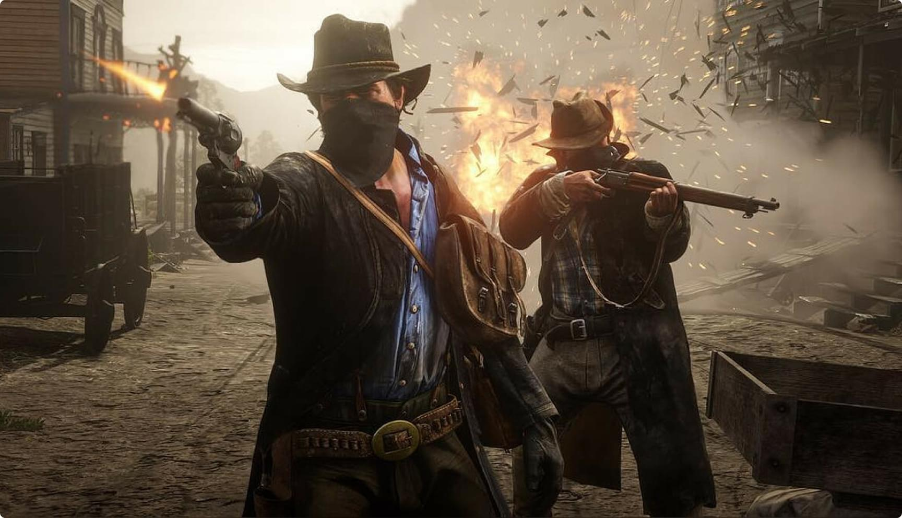

Red Dead Redemption, Rockstar San Diego tarafından geliştirilen ve Rockstar Games tarafından yayınlanan bir aksiyon-macera video oyunudur. İlk olarak 2010'da PlayStation 3 ve Xbox 360 için ve daha sonra 2016'da Xbox One ve PlayStation 4 için piyasaya sürüldü. 1911'de Amerika Birleşik Devletleri'nin kurgusal batısında ve Meksika'da geçen oyun, eski suçlu John Marston'ın kendisini zorladığı zamanki hikayesini anlatıyor. ailesini kurtarmak için federal ajanlarla çalışmak.
Oyun, oyuncuların geniş oyun dünyasını keşfedebilecekleri, görevleri tamamlayabilecekleri ve NPC'lerle etkileşime girebilecekleri açık bir dünyaya sahiptir. Oyuncular ayrıca avlanma, kumar ve düello gibi çeşitli yan faaliyetlerde bulunabilirler.Slot makinesi siteleri, oyunculara kayıt olmadan her türlü oyunu oynama olanağı sağlayabilir. Oyunun "Dead Eye" adlı kapak sistemi, oyuncuların zamanı yavaşlatmasına ve aynı anda birden fazla düşmanı hedeflemesine olanak tanır.
Oyun birçok ödül kazandı ve dünya çapında 15 milyondan fazla kopya satarak tüm zamanların en çok satan video oyunlarından biri oldu. Red Dead Redemption 2'nin devamı 2018'de yayınlandı.
Karakterler
Oyunu ikinci bölümle karşılaştırıyorum ve burada hiç karakter olmadığını görüyorum. Sadece görev verenler var. Bazıları komik konuşuyor, bazıları komik görünüyor, bazıları cesetlerle eğleniyor. Onlara hiçbir şey olmuyor. Değişmezler, kaderleri, hedefleri, motivasyonları yoktur. Bu insanlar hakkında bilmemiz gereken her şeyi, onları ilk gördüğümüzde öğreniyoruz.

Oynanış
Oyunun bir konusu var gibi görünüyor. Ama öyle değil. Teorik olarak, hükümet tarafından Hollandalı çeteden eski tanıdıkları bulup öldürmeye zorlanan 1910 modelinden John Marston olarak oynuyoruz. Ajanlar Marston ailesini rehin aldığından risk yüksektir. Bu nasıl oldu, hiçbir fikrimiz yok ama ciddi görünüyor.
Elbette oyun boyunca her şeyi yapacağız ama eski haydut arkadaşlarını aramayacağız. Elbette bu, oyunlarda yaygın bir hikayedir: evet, ad girin bulmanıza yardım edeceğim, ama önce bu konuda bana yardım edin. Tamam, bu bir gezinti. Belki iki, eğer kişi iyiyse. Ancak oyunun tamamı kesinlikle her NPC ile birçok kez değil! Doğru, şimdi Ubisoft, Suikastçılarda bu hamleyi utanmadan kullanıyor.
Bu iyi bir şekilde düzenlenebilir ve başlangıçta oyun başarılı olur. Bonnie McFarland yere düşen kahramanımızı kim olduğunu bile bilmeden kurtardığında, Marston doğal olarak kendini mecbur hissediyor. Ve ilk başta, oyun on iki yıllık bir indirimle gerçekten harika görünüyor.
İlk görevler bir tür öğretici görevi görür ve hatta iyi motive edilirler. Marston aklını başına toplar, kurtarıcısına ve yerel şerife yardım eder. Hepsi mantıklı. Hatta yol boyunca Williamson çetesinden birini yakalıyoruz, ancak bu Bill'in kendisini aramamıza hiç yardımcı olmuyor. Ama sonra oyun tersine döner ve Vahşi Batı'daki her ayyaşın ayak işlerini yapmaya başlarız ve olan bitende bir anlam bulmak giderek daha zor hale gelir. Sonuç olarak, yol boyunca Meksika'da bir devrim yapıyoruz, ancak hedefimize daha fazla yaklaşmıyoruz. Yazarlar genellikle Williamson'ın yakalanmasını kendisi için hiç geçerli olmayan bir göreve ittiler.